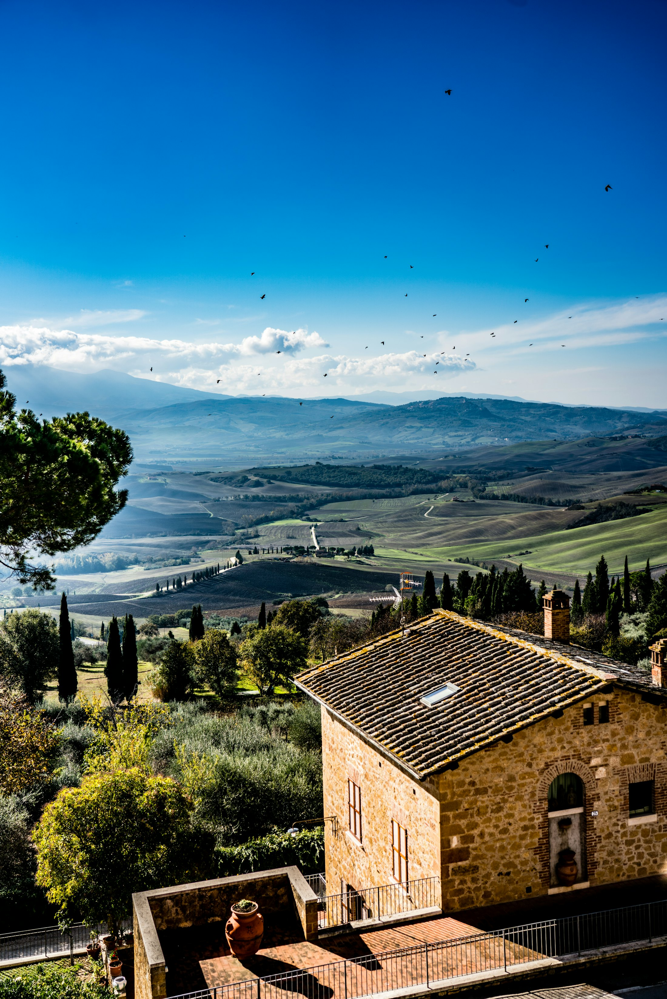

01
Pace e prevenzione dei conflitti
Formiamo nuove generazioni di costruttori di pace e sosteniamo il dialogo nelle comunità.

Donne e uomini che uniscono competenze e passione per servire la comunità, sostenere i giovani e custodire il paesaggio che amiamo.
Il Rotary Club Val d'Orcia riunisce professionisti, imprenditori e volontari che condividono un impegno semplice: mettere le proprie competenze al servizio del territorio. Ogni settimana ci incontriamo per trasformare le idee in progetti concreti.
Dal 2024 lavoriamo tra Pienza, Castiglione d'Orcia e San Quirico d'Orcia, insieme a Rotary International e ai suoi 1,4 milioni di soci nel mondo, uniti dal motto "Servire al di sopra di ogni interesse personale".
"Piccoli gesti, moltiplicati da milioni di persone,
possono trasformare il mondo."

Sette aree in cui il Rotary genera un impatto duraturo, nel mondo e qui, in Val d'Orcia.
Formiamo nuove generazioni di costruttori di pace e sosteniamo il dialogo nelle comunità.
Sosteniamo screening, prevenzione e l'accesso alle cure per chi ne ha più bisogno.
Promuoviamo acqua pulita, servizi igienici e buone pratiche per una vita sana.
Aiutiamo mamme e bambini ad avere accesso a cure di qualità nei primi anni di vita.
Borse di studio, alfabetizzazione e sostegno ai giovani talenti del territorio.
Sosteniamo imprese locali, artigiani e giovani professionisti della Val d'Orcia.
Proteggiamo il paesaggio UNESCO, le acque e la biodiversità che rendono unica questa terra.
Ogni area di intervento vive grazie a chi dona tempo, competenze e idee. C'è posto anche per te.
Scopri come"Ci prendiamo cura delle persone e dei luoghi:
una comunità forte nasce da entrambi."
Che tu abbia tempo, competenze o semplicemente voglia di fare, c'è un posto per te attorno al nostro tavolo. Scrivici: iniziamo a conoscerci senza impegno.